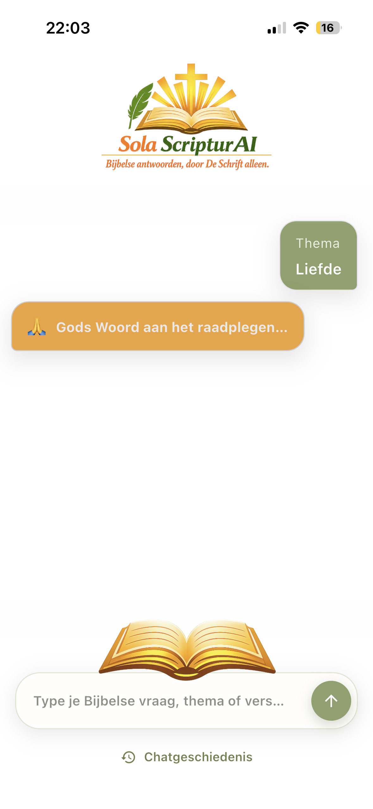
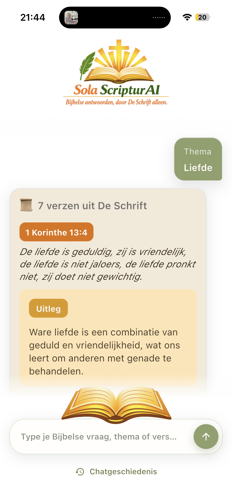
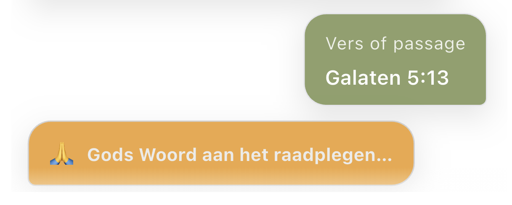
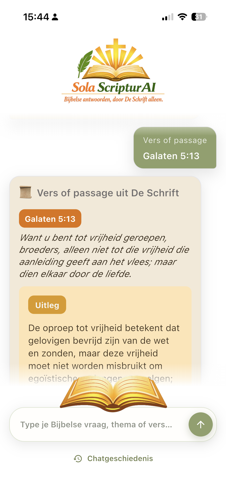
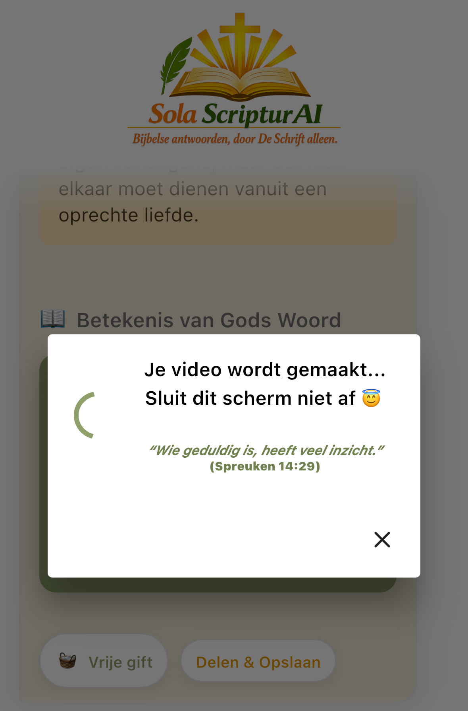

Missie
De missie van Sola ScripturAI is om mensen dichter bij Gods Woord te brengen. Vanuit het principe Sola Scriptura – De Schrift alleen – helpt de app gebruikers Bijbelse antwoorden te vinden die geworteld zijn in de Schrift zelf. Eenvoudig, betrouwbaar en gratis toegankelijk.
Kernidee
Zie Sola ScripturAI als een zoekmachine voor de Bijbel. Stel een vraag over geloof, het christelijk leven of een Bijbels onderwerp en de AI zoekt uitsluitend in de Schrift naar passende antwoorden. Bij ieder antwoord worden de gebruikte Bijbelverzen weergegeven zodat je alles zelf kunt toetsen aan Gods Woord.
Van vraag naar Bijbels antwoord
Kies een thema, stel een vraag of open een Bijbelpassage. Sola ScripturAI brengt verzen, uitleg en de kern van Gods Woord rustig en overzichtelijk samen.





Eenvoudig en gratis
Sola ScripturAI is bewust eenvoudig gehouden. Geen advertenties, geen abonnement en geen verborgen kosten. Iedereen kan de app gratis gebruiken. Wil je bijdragen aan de verdere ontwikkeling en de kosten voor AI en hosting helpen dragen, dan kun je vrijblijvend een vrije gift doen.
Belangrijkste functies
- 📖 AI-zoekmachine gebaseerd op de Bijbel.
- 🔎 Antwoorden met Bijbelverwijzingen.
- ✨ Ontdek Bijbelse thema's en onderwerpen.
- 🕊️ Deelfunctie - om Gods Woord en antwoorden te verspreiden.
"Bijbelse antwoorden, door De Schrift alleen."